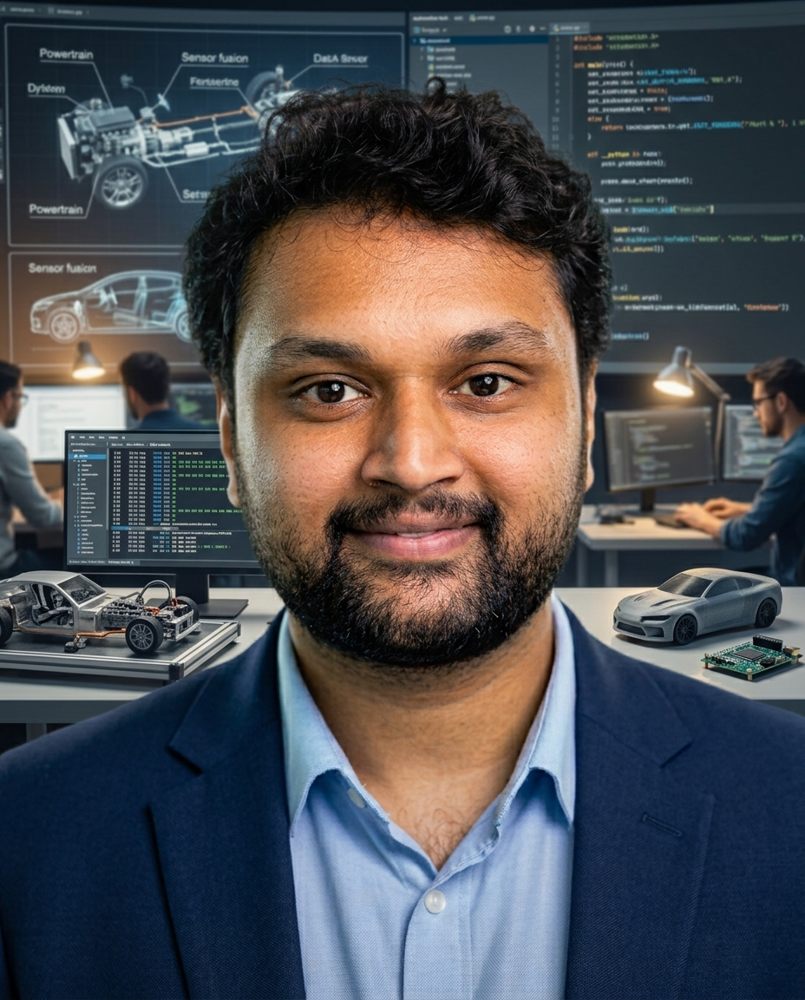

▌
I build the perception and sensor-fusion software that lets vehicles understand the world around them — from grid-based localization prototypes to safety-critical systems validated for series production. Today I also apply ML and LLM agents, from simulation-driven perception validation to my own project, AIme.

I'm a Systems & Software Engineer based in Berlin, currently at CARIAD (Volkswagen Group), working at the intersection of perception software and simulation-driven ML. Over the past six years I've moved from algorithm development to systems validation to, now, applied ML — always anchored in the same problem: helping a vehicle reliably detect, fuse, and interpret what its sensors see.
My background spans grid-based sensor fusion (radar + camera), KPI-driven perception validation, and safety-critical software delivery under ASPICE and ISO 26262. I've worked across the full lifecycle — from early-stage L4 sensor-set assessment to production-grade C++ implementation and series release sign-off.
Beyond the vehicle, I build applied AI on my own time. AIme is a personal assistant, personal trainer and dietician that runs on a local LLM (Ollama) and is orchestrated as a multi-node LangGraph agent. It routes each Telegram message to the right specialist, uses tool calling against Notion and Garmin data, and asks for human confirmation before writing anything.
I'm open to conversations on AI-driven mobility, safety-critical systems, and intelligent vehicle platforms.
Focus: Driver Assistance Systems, Sensing, Mechatronics
Foundation in mechanical systems and engineering fundamentals.
Professional working proficiency in German.
C++ course completion, Automotive SPICE basics, requirements engineering.